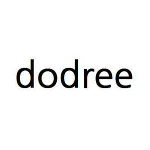

Trade Mark Journal No.2025/049 5 December 2025
UK00004269108 25 September 2025 (9,16,35,38,41)

International priority date claimed: 28 March 2025
(Republic of Korea)
(40-2025-0051255)
International priority date claimed: 28 March 2025
(Republic of Korea)
(40-2025-0051257)
International priority date claimed: 28 March 2025
(Republic of Korea)
(40-2025-0051262)
International priority date claimed: 28 March 2025
(Republic of Korea)
(40-2025-0051263)
International priority date claimed: 28 March 2025
(Republic of Korea)
(40-2025-0051264)
- Class 9
- Biochip sensors for research or scientific purposes; optical glasses; digital door locks; analysis apparatus for laboratory use; telescopes; cameras; video conferencing apparatus; mounting devices for cameras and monitors; anti-reflective lenses; audiovisual teaching apparatus; household thermometers; sunglasses; spectacles and eyeglasses for swimming; eyeglasses; contact lenses; calculating machines; photocopiers; mechanisms for coin-operated apparatus; acoustic alarms; electric fences; chargers for smartphones; neon signs; auxiliary battery packs; cables, electric; battery charging cables; electric door bells; MP3 players; apparatus for reading digital music; wireless speakers; electric audio and visual apparatus and instruments; smartwatches; smartphones; earphones; headphones; CDs; selfie sticks for use with digital electronic devices; protective films adapted for smartphones; cases for smartphones; humanoid robots with artificial intelligence for use in scientific research; computer software for accessing information directories that may be downloaded from a global computer network; software for commerce over a global communications network; downloadable computer software for access, reading and tracking of information in the field of music, dance, entertainment, entertainment media collections, music bands, music videos, and movies using blockchain technology; downloadable virtual goods, namely, computer programs featuring virtual artworks, articles of clothing, jewels, hats, shoes, bags, sports equipment, weapons, toys, video game equipment, image files of cartoon characters, badges of precious metal, stickers, image files of emoticons, clothing accessories for use in online video games and online virtual environment; downloadable e-wallets; downloadable computer programmes for use in telecommunications; computer software for transmitting and broadcasting audio, video, multimedia contents; compact discs featuring music; electronic tags; computer peripherals and accessories; computer peripheral devices; bar code labels, encoded; identification labels, encoded; decorative magnets; computer game cartridges; signalling whistles; gloves for protection against accidents; protective helmets; anti-pollution masks for respiratory protection; downloadable music files; phonograph records featuring music; electronic media containing music; digital music downloadable provided from a computer database or the internet; downloadable multimedia file; metronomes; downloadable digital video recordings; downloadable image files; downloadable emoticons for mobile phones; cards bearing electronically recorded data; downloadable entry tickets; downloadable animation files; electronic publications, downloadable; virtual confectionery; virtual tea; virtual fruit drinks and juices; virtual adhesive plasters; virtual cosmetics; virtual mugs; virtual cookers; virtual coin banks; virtual stationery; virtual bags; virtual furniture; virtual cushions; virtual footwear; virtual umbrellas; virtual glasses; virtual wristwatches; virtual toys; virtual cheering sticks for entertainment, being novelty items; virtual apparatus for games; virtual roller skates; virtual clothing; virtual decorative articles for the hair; virtual jewellery made of precious metals; virtual sports helmets; virtual downloadable electronic books; virtual books; virtual CDs; virtual musical instruments.
- Class 16
- Glue for stationery or household purposes; garbage bags of paper [for household use]; advertising signs of paper; placards of paper; bunting of paper; covers of paper for flower pots; disposable housebreaking pads of paper or cellulose for pets; toilet bowl liners of paper; paper patterns; packing paper; paper and cardboard; paper tissues; stationery; office stationery; stickers; writing instruments; note paper; note books; sealing stamps; albums for collecting sticker cards; plastic pages with pockets for holding trading cards; typewriters and office requisites [except furniture]; plastic film for wrapping; money clips; passport cases; gift boxes; paper bags; pouches of plastic for packaging; party ornaments of paper; place mats of paper; paint rollers; bookbinding apparatus and machines [office equipment]; bookbinding cloth; bibs of paper; credit cards without magnetic coding; printed calendars; printed postcards; printed entry tickets; cards for collection; software programmes and data processing programmes in printed form; printed matter; graphic prints and representations; drawings; works of art made of paper; figures made of paper; photographic prints; modelling materials; books; printed publications; pictorial magazine.
- Class 35
- Retail store services in relation to nutraceuticals for use as dietary supplements; wholesale store services in relation to pharmaceuticals; retail store services in relation to pharmaceuticals; advertising agency services; marketing consulting; consultancy of conducting events for commercial and promotional purposes; presentation of goods on communication media, for retail purposes; online advertising via a computer communications network; publicity agency services; accounting services; business management assistance; commercial administration of the licensing of the goods and services of others; business management of entertainers; talent agency services [business management of performing artists]; business management of performing artists; human resources management; developing and coordinating volunteer projects for charitable organizations; sponsorship search; systematization of data in computer databases; collection, systematization, compilation and analysis of business data and information stored in computer databases; goods import-export agencies; import and export agencies; administrative processing of purchase orders; office machines and equipment rental; arranging and conducting of auctions; arranging of auction sales; secretarial services; telephone answering and message handling services; arranging subscriptions to media packages; arranging subscriptions to books, reviews, newspapers or comic books; arranging subscriptions for the online publications of others; subscription to an information media package; retail store services in relation to food for babies; retail store services in relation to bread; retail store services in relation to waters [beverages]; retail store services in relation to beer; retail store services in relation to meat; sales agency services for medical apparatus and instruments; retail store services in relation to cosmetics; retail store services in relation to dog toys; retail store services in relation to scissors; retail store services in relation to containers for household or kitchen use; retail store services in relation to kitchen containers; retail store services in relation to stationery; retail store services in relation to bags; retail store services in relation to furniture; retail store services in relation to picture frames; retail store services in relation to footwear; retail store services in relation to umbrellas; retail store services in relation to charms for key rings; sales arranging of eyeglasses; retail store services in relation to tuners for musical instruments; retail store services in relation to humidifiers; sales agency services for smartphones; retail store services in relation to trading cards [encoded- machine readable]; retail store services in relation to bar code labels, encoded; retail store services in relation to identification labels [encoded]; wholesale store services in relation to computer software to enhance the audio-visual capabilities of multimedia applications, namely, for the integration of text, audio, graphics, still images and moving pictures; retail store services in relation to CDs; retail store services in relation to toys; retail store services in relation to firecrackers; retail store services in relation to cheering sticks for entertainment, being novelty items; wholesale store services in relation to cheerleading pom-poms; wholesale store services in relation to clothing; wholesale store services in relation to downloadable music files; wholesale store services in relation to digital music downloadable provided from a computer database or the internet; online retail services for downloadable and pre-recorded music and movies; wholesale store services in relation to downloadable multimedia file; retail store services in relation to downloadable image files for virtual goods; wholesale store services in relation to graphic prints; wholesale store services in relation to cards for collection; promoting the goods and services by means of operating an on-line comprehensive shopping mall; business intermediary services relating to mail order by telecommunications; retail store services in relation to downloadable virtual stationery; retail store services in relation to downloadable virtual bags; retail store services in relation to downloadable virtual furniture; retail store services in relation to downloadable virtual footwear; retail store services in relation to downloadable virtual glasses; retail store services in relation to downloadable virtual toys; retail store services in relation to downloadable virtual cheering sticks for entertainment, being novelty items; retail store services in relation to downloadable virtual clothing; retail store services in relation to downloadable virtual jewellery made of precious metals; retail store services in relation to downloadable virtual interior decoration fabrics.
- Class 38
- Electronic transmission of data, audio, video and multimedia files, particularly, downloadable files and files streamed over a global computer network; providing access to mobile internet portals; electronic data transmission of sound and images between mobile telecommunications devices; providing access to chat lines, chatrooms and forums on the internet, including mobile internet; electronic transmission of video via mobile computers and the internet; providing online chat rooms and electronic bulletin board services; electronic bulletin board services for location-based social networking service (SNS); transmission of digital files for location-based social networking service (SNS); streaming of audio and video content on the internet; transmission of video and audio via the mobile and internet; electronic transmission of data via a peer-to-peer network; transmission of downloadable electronic publications by means of the internet; communication services, namely, transmission of sound and visual recordings over telecommunications networks; digital media streaming services, namely, electronic transmission and streaming of digital media content for others via global and local computer networks; short message transmission services; chatroom services for social networking; transmission of electronic mail; video-on-demand transmission; providing access to online virtual environment; interactive broadcasting and communications services; broadcasting and transmission of television programs; multimedia broadcasting via the internet and other communications networks; digital audio broadcasting; internet broadcasting services; television broadcasting; radio broadcasting.
- Class 41
- Electronic publications of non-downloadable image files as content featuring virtual goods traded in metaverse or virtual reality environments; providing facilities for movies, shows, plays, music or educational training; production of CD recordings of music; production of music videos; entertainment services performed by singers; planning of entertainment performances; organisation of pop music concerts; editing of digital images; ticket reservation services for live performances; providing of digital music via mobile devices; provision of information relating to entertainment, music, live performances and entertainment events; songwriting; arranging and conducting of concerts; entertainer services; production of music; presentation of musical performances; ticket reservation agency services for entertainment performance and theater events; providing information in the field of entertainment; modelling for artists; providing on-line, non-downloadable virtual goods for use in virtual environments created for entertainment purposes; provision of radio and television entertainment services providing online virtual reality for transactions of virtual entertainment collectibles and tokens; providing user reviews for entertainment or cultural purposes; arranging and conducting of competitions [education or entertainment]; booking of seats for shows and sports events; ticket reservation and booking services for entertainment, sporting and cultural events; information relating to entertainment and amusement; fan club services in the nature of entertainment; organization of competitions [education or entertainment]; rental of performance venues; providing audio or video studios; recording studio services; rental of sound recordings and video recordings; animal training; instruction and training services; instruction of fishery skills; publishing books in the field of entertainment; music publishing services; publication of books; night club entertainment services; rental of printed publications; lending library services; providing online electronic publications; production of entertainment content for use in the metaverse, virtual reality or a combination thereof; conducting of cultural events; arranging and conducting of conferences and exhibitions for cultural or educational purposes; organization of exhibitions for cultural or educational purposes; provision of courses of instruction in languages; providing information in the field of education; educational services provided by special needs assistants; educational services; artists education; instruction of acting, singing, dancing; academies with study room; arranging and conducting of seminars; beauty education; education and training services relating to the music and entertainment industries; organization of dancing events; game services providing online non-downloadable virtual jewels, postcards, posters, photos, photo albums, books, magazines, wallets, bags, furniture, towels, blankets, clothing, hats, shoes, toys, games, houses, buildings, vehicles, food and beverages for use in virtual environments; game services providing online virtual reality for transactions of virtual entertainment collectibles and tokens; provision of recreation facilities and services; providing on-line game featuring trading virtual goods for use in metaverse environments; recreational park services; digital filming services; editing of photographs; news reporter services relating to gathering and dissemination of news; animal training; organizing and arranging exhibitions for entertainment purposes; translation.
JYP ENTERTAINMENT CORPORATION
Representative: Murgitroyd & Company